Click the desktop to explore.

Read the plain-text summary
I’m Sanyam, an M.S. Computer Science candidate at Boston University. I build event-driven backends and experiment with local AI agents. I’m happiest working out how a system behaves as events arrive, queues fill, and models make decisions.
I believe AI should be open-source, private, and under its users’ control. That keeps me tinkering with local models—and learning something new about backend engineering every day.
LinkedIn · Email · Showcase projects
NoDust
A streaming pipeline that turns simulated air-quality sensor events into hourly aggregates and anomaly alerts. Kafka carries the events, Spark processes them, and PostgreSQL stores the results.
Python · Kafka · Spark · PostgreSQL
Architecture · Run it locally

CUDA wildfire simulation
Monte Carlo wildfire simulation on the GPU. I wrote the CPU baseline and implemented CUDA dynamic parallelism, then compared the approaches through profiling and benchmarks.
C++ · CUDA · Performance profiling
Benchmark report
Also shipped: YT Gatekeeper
YT Gatekeeper
A Chrome extension I published to make YouTube use more intentional: daily watch-time tracking and a short pause before continuing.
JavaScript · Chrome Extensions
Chrome Web Store

All public repositories, including forks and this profile. Percentages are based on GitHub-reported language bytes—not proficiency or time spent. Every detected language is included; private repositories are not counted. Refreshed weekly via GitHub Actions.
Backend & data Python, Go, SQL, FastAPI, Kafka, Spark, PostgreSQL
AI & systems PyTorch, computer vision, llama.cpp, RAG, C++, CUDA
Infrastructure Docker, AWS, Google Cloud, GitHub Actions
- BU Spark! — Applied AI work for a healthcare administration client. The local AI phone-navigation project below is part of this engagement.
- Local AI phone navigation — Building an agent and a simulator to test when local models dial, wait, or hand off.
- Computer vision & ASL · Talks.ai — Training continuous sign-language recognition models and benchmarking video architectures. I’m also exploring graph neural networks for sign recognition.
- Go stream processing · BU — Evaluating cache bypassing, asynchronous prefetching, and cross-batch caching across read-heavy and write-heavy workloads.
No planned projects listed yet.
I sketch regularly, get absorbed in story-driven games, and love old paintings. Aivazovsky’s Ship on a Stormy Sea is my favorite. I’m also into F1 and experimenting with local AI.